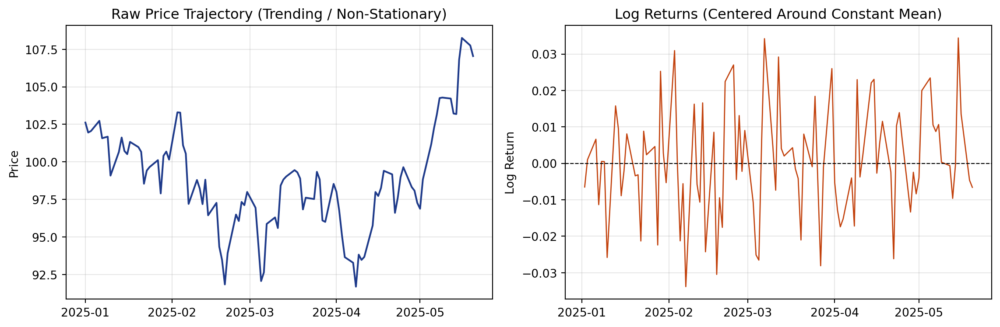

If you have never studied time series analysis before, start here. Before we touch autoregressive equations, Kalman filters, or deep sequence networks, this chapter builds every mathematical and computational tool you will use across Units 1–4—from expectation algebra and difference equations to complex roots on the unit circle and Python time-indexing.
1.1 Opening: Two Signals, One Mathematical Backbone
Imagine two completely different rooms on the same Tuesday morning:
The Neurology Lab: A clinician places electrodes on a patient’s scalp to record an electroencephalogram (EEG). Every 4 milliseconds (\(250\text{ Hz}\)), the amplifier logs a voltage in microvolts (\(\mu\text{V}\)). When the patient closes their eyes and relaxes, the trace settles into a smooth \(10\text{ Hz}\) ripple—the alpha rhythm. Seconds before an epileptic seizure, that rhythm changes character.
The Trading Desk: A quantitative analyst watches the closing prices of an equity index—say, the NIFTY 50 or S&P 500—alongside trading volume and interest rates. Tomorrow’s portfolio risk depends on whether today’s sudden \(3\%\) drop is an isolated shock or the start of a turbulent volatility cluster.
On the surface, brainwaves and stock prices have nothing in common. Underneath, both are ordered sequences indexed by time, and both violate the #1 assumption of introductory statistics:
The \(i.i.d.\) Trap: Standard statistics assumes rows in a dataset are independent and identically distributed (\(i.i.d.\)). If you shuffle the rows of a housing-price table, nothing breaks. If you shuffle the rows of an EEG recording or a stock chart, you destroy the physics of the problem—causality, momentum, cycles, and memory [4].
To analyze the time series data rigorously, we need a shared mathematical backbone. Each section below introduces the key definitions, first-principles derivations, worked sample problems, and key takeaways you need before entering Unit 1.
1.2 Probability & Moment Algebra From Scratch
Almost every proof in Units 1–4 relies on four algebraic rules for random variables. Mastering them now makes every later derivation transparent [1].
1.2.1 Key Definitions & Important Terms
Random Variable (\(X\)): A numerical outcome of a random phenomenon (e.g., tomorrow’s return or the EEG voltage at \(t = 1.2\text{ s}\)).
Expectation (\(\mathbb{E}[X]\) or \(\mu_X\)): The probability-weighted average (center of mass) of \(X\): \(\mathbb{E}[X] = \sum_x x \, p(x)\) (discrete) or \(\int_{-\infty}^\infty x f(x)\,dx\) (continuous).
Variance (\(\mathrm{Var}(X)\) or \(\sigma_X^2\)): The expected squared deviation from the mean, measuring spread around \(\mu_X\).
Covariance (\(\mathrm{Cov}(X, Y)\)): A measure of the linear co-movement between two random variables \(X\) and \(Y\).
Pearson Correlation (\(\rho(X, Y)\)): A unitless, standardized version of covariance bounded in \([-1, 1]\).
1.2.2 First-Principles Derivations of Moment Identities
Let \(X, Y\) be random variables with finite second moments (\(\mathbb{E}[X^2] < \infty, \mathbb{E}[Y^2] < \infty\)), and let \(a, b, c \in \mathbb{R}\) be constants.
1.2.2.1 Theorem 0.1: Linearity of Expectation & Variance Scaling
\(\mathbb{E}[aX + bY + c] = a\mathbb{E}[X] + b\mathbb{E}[Y] + c\) (holds even when \(X\) and \(Y\) are dependent).
Derivation from First Principles: By definition, \(\mathrm{Var}(X) = \mathbb{E}[(X - \mu_X)^2]\). Expanding the square inside the expectation and applying linearity: \[\begin{aligned}
\mathrm{Var}(X) &= \mathbb{E}[X^2 - 2\mu_X X + \mu_X^2] \\
&= \mathbb{E}[X^2] - 2\mu_X \mathbb{E}[X] + \mu_X^2 = \mathbb{E}[X^2] - 2\mu_X^2 + \mu_X^2 = \mathbb{E}[X^2] - \mu_X^2
\end{aligned} \tag{0.1}\] For \(W = aX + c\), its mean is \(\mu_W = \mathbb{E}[aX + c] = a\mu_X + c\). Therefore: \[\mathrm{Var}(aX + c) = \mathbb{E}\big[((aX + c) - (a\mu_X + c))^2\big] = \mathbb{E}\big[a^2(X - \mu_X)^2\big] = a^2 \mathrm{Var}(X) \tag{0.2}\] Adding a constant \(c\) shifts the location but leaves the spread untouched.
1.2.2.2 Theorem 0.2: Bilinearity of Covariance & Sum-of-Variances Identity
For any random variables \(X_1, \dots, X_m\) and \(Y_1, \dots, Y_n\): \[\mathrm{Cov}\left(\sum_{i=1}^m a_i X_i, \, \sum_{j=1}^n b_j Y_j\right) = \sum_{i=1}^m \sum_{j=1}^n a_i b_j \, \mathrm{Cov}(X_i, Y_j) \tag{0.3}\] In particular, for two variables \(X\) and \(Y\): \[\mathrm{Var}(X + Y) = \mathrm{Var}(X) + \mathrm{Var}(Y) + 2\,\mathrm{Cov}(X, Y) \tag{0.4}\]
Derivation from First Principles: Let \(\tilde{X}_i = X_i - \mathbb{E}[X_i]\) and \(\tilde{Y}_j = Y_j - \mathbb{E}[Y_j]\) be the centered variables. By linearity of expectation, \(\sum a_i X_i - \mathbb{E}[\sum a_i X_i] = \sum a_i \tilde{X}_i\). Thus: \[\mathrm{Cov}\left(\sum_{i=1}^m a_i X_i, \, \sum_{j=1}^n b_j Y_j\right) = \mathbb{E}\left[\left(\sum_{i=1}^m a_i \tilde{X}_i\right)\left(\sum_{j=1}^n b_j \tilde{Y}_j\right)\right] = \sum_{i=1}^m \sum_{j=1}^n a_i b_j \, \mathbb{E}[\tilde{X}_i \tilde{Y}_j] = \sum_{i=1}^m \sum_{j=1}^n a_i b_j \, \mathrm{Cov}(X_i, Y_j)\] Setting \(m = n = 2\), \(Y_i = X_i\), and \(a_1 = a_2 = 1\) gives \(\mathrm{Var}(X_1 + X_2) = \mathrm{Cov}(X_1+X_2, X_1+X_2) = \mathrm{Var}(X_1) + \mathrm{Var}(X_2) + 2\,\mathrm{Cov}(X_1, X_2)\).
1.2.3 Sample Problem 0.1 (Moment Algebra)
Statement: Let \(Z_1, Z_2, Z_3\) be uncorrelated white noise shocks with mean \(0\) and variance \(\sigma^2 = 4\). Define \(X_2 = Z_2 + 0.5 Z_1\) and \(X_3 = Z_3 + 0.5 Z_2\). Compute \(\mathbb{E}[X_2]\), \(\mathrm{Var}(X_2)\), \(\mathrm{Cov}(X_2, X_3)\), and \(\rho(X_2, X_3)\).
Covariance is bilinear: you can pull constants out and expand sums just like ordinary polynomial multiplication. When random variables share a common shock (\(Z_2\)), they become correlated—and \(\mathrm{Var}(X+Y)\) gains the cross-term \(2\,\mathrm{Cov}(X,Y)\).
1.3 White Noise: The base of Time Series
Every time series model in this course is built by passing pure, unpredictable randomness through a mathematical filter [2]. We call that pure randomness white noise.
1.3.1 Key Definitions & Important Terms
Definition 0.1: White Noise Process
A sequence \(\{Z_t\}_{t \in \mathbb{Z}}\) is white noise, denoted \(Z_t \sim WN(0, \sigma^2)\), if:
\(\mathbb{E}[Z_t] = 0\) for all \(t\),
\(\mathrm{Var}(Z_t) = \sigma^2 < \infty\) for all \(t\), and
If the \(Z_t\) are also independent and Normally distributed, we write \(Z_t \overset{i.i.d.}{\sim} \mathcal{N}(0, \sigma^2)\) (Gaussian white noise).
Innovation / Shock (\(Z_t\)): The genuinely new, unpredictable information arriving at time \(t\) (e.g., an unexpected RBI rate decision or thermal electrode noise).
1.3.2 Sample Problem 0.2 (Checking White Noise Properties)
Statement: Let \(Z_t \sim WN(0, \sigma^2)\). Suppose \(Y_t = Z_t - Z_{t-1}\). Is \(\{Y_t\}\) white noise?
Solution: Check condition 3: \(\mathrm{Cov}(Y_t, Y_{t-1}) = \mathrm{Cov}(Z_t - Z_{t-1}, Z_{t-1} - Z_{t-2}) = -\mathrm{Var}(Z_{t-1}) = -\sigma^2 \neq 0\). Because lag-1 covariance is non-zero, \(\{Y_t\}\) is not white noise (differencing white noise creates negative correlation).
Key Takeaway: Section 0.3
White noise has zero mean, constant variance, and zero correlation across distinct time points. It is the unpredictable “raw fuel” that drives every AR, MA, ARIMA, and State-Space model.
1.4 Difference Equations & The Backward Shift Operator \(B\)
In calculus, differential equations (\(\frac{dx}{dt} = -\lambda x\)) govern continuous time. In digital EEG amplifiers and daily stock closes, time arrives in discrete ticks \(t = 0, 1, 2, \dots\), so difference equations take center stage [3].
1.4.1 Key Definitions & Important Terms
Backward Shift (Lag) Operator (\(B\)): Shifts a series one step back in time: \(B X_t = X_{t-1}\), and in general \(B^k X_t = X_{t-k}\).
First-Difference Operator (\(\nabla\)): Computes the step-to-step change: \(\nabla X_t = (1 - B) X_t = X_t - X_{t-1}\).
The lag operator \(B\) turns messy subscript recursions into clean polynomial algebra. Whenever \(|\phi| < 1\), \((1 - \phi B)^{-1}\) expands into a decaying infinite sum of past shocks.
1.5 Complex Numbers & The Unit Circle (Why Oscillations Happen)
When a second-order difference equation \(X_t - \phi_1 X_{t-1} - \phi_2 X_{t-2} = Z_t\) has a negative discriminant, its characteristic polynomial \(\Phi(z) = 1 - \phi_1 z - \phi_2 z^2 = 0\) produces complex conjugate roots. In time series, complex roots are not abstract—they are the mathematical signature of cycles (like \(10\text{ Hz}\) EEG alpha waves or business cycles) [1], [3].
1.5.1 Key Definitions & Important Terms
Complex Number (\(z = a + bi\)): A point in the 2D complex plane with real part \(a\), imaginary part \(b\), modulus \(r = |z| = \sqrt{a^2 + b^2}\), and phase angle \(\theta = \mathrm{atan2}(b, a)\).
The modulus\(|z|\) of characteristic roots governs stability (\(|z| > 1\) means shocks decay), while the angle\(\theta\) governs oscillation period (\(T = 2\pi/\theta\)).
1.6 Financial Returns vs. Raw Prices (Essential Transformation)
Raw stock prices \(P_t\) drift upward over decades and have expanding variance, making them non-stationary [4]. Analysts therefore convert prices into returns.
1.6.1 Key Definitions & Important Terms
Simple Return (\(R_t\)): \(R_t = \frac{P_t - P_{t-1}}{P_{t-1}}\). Additive across assets in a portfolio, but not across time.
For a \(k\)-day horizon from \(t-k\) to \(t\): \[r_t + r_{t-1} + \dots + r_{t-k+1} = \sum_{j=0}^{k-1} \big(\ln P_{t-j} - \ln P_{t-j-1}\big) = \ln P_t - \ln P_{t-k} = \ln\left(\frac{P_t}{P_{t-k}}\right) \tag{0.10}\] All intermediate prices telescope out! Moreover, since \(P_t / P_{t-1} = 1 + R_t\), a first-order Taylor expansion \(\ln(1 + R_t) = R_t - \frac{R_t^2}{2} + \dots\) shows \(r_t \approx R_t\) when \(|R_t| \ll 1\).
1.6.3 Sample Problem 0.5 (Simple vs. Log Returns)
Statement: A stock closes at \(P_0 = 100\), \(P_1 = 105\), \(P_2 = 99.75\). Compute \(R_1, R_2\) and \(r_1, r_2\), and verify time-additivity.
Solution: \(R_1 = +0.05\), \(R_2 = -0.05\), so \(R_1 + R_2 = 0\) (misleading, since \(P_2 < P_0\)). By contrast, \(r_1 = \ln(1.05) = +0.04879\), \(r_2 = \ln(0.95) = -0.05129\), and \(r_1 + r_2 = -0.00250 = \ln(99.75/100)\), matching the true \(-0.25\%\) cumulative drop.
Key Takeaway: Section 0.6
Always model log returns\(r_t = \nabla \ln(P_t)\) rather than raw price levels \(P_t\) when analyzing single-asset time series dynamics; log returns telescope cleanly across multi-day horizons.
1.7 Bootcamp Python Lab: Time-Indexing, Lags, and Returns
import numpy as npimport pandas as pdimport matplotlib.pyplot as plt# 1. Create a time-indexed DataFrame (preserve chronological order!)dates = pd.date_range(start="2025-01-01", periods=100, freq="B")np.random.seed(7)# Simulate a Random Walk Stock Price: P_t = P_0 * exp(sum of log returns)daily_log_ret = np.random.normal(loc=0.0005, scale=0.015, size=len(dates))prices =100* np.exp(np.cumsum(daily_log_ret))df = pd.DataFrame({"Close": prices}, index=dates)df["Lag_1"] = df["Close"].shift(1)df["Diff_1"] = df["Close"].diff(1)df["Log_Return"] = np.log(df["Close"] / df["Close"].shift(1))print(df.head(5))print(f"\nMean Daily Log Return: {df['Log_Return'].mean():.5f}")print(f"Daily Volatility (Std): {df['Log_Return'].std():.5f}")fig, (ax1, ax2) = plt.subplots(1, 2, figsize=(12, 4))ax1.plot(df.index, df["Close"], color="#1e3a8a", lw=1.5)ax1.set_title("Raw Price Trajectory (Trending / Non-Stationary)")ax1.set_ylabel("Price")ax1.grid(True, alpha=0.3)ax2.plot(df.index, df["Log_Return"], color="#c2410c", lw=1.0)ax2.axhline(0, color="black", ls="--", lw=0.8)ax2.set_title("Log Returns (Centered Around Constant Mean)")ax2.set_ylabel("Log Return")ax2.grid(True, alpha=0.3)plt.tight_layout()plt.show()
Close Lag_1 Diff_1 Log_Return
2025-01-01 102.619510 NaN NaN NaN
2025-01-02 101.955762 102.619510 -0.663748 -0.006489
2025-01-03 102.056983 101.955762 0.101221 0.000992
2025-01-06 102.734096 102.056983 0.677113 0.006613
2025-01-07 101.576297 102.734096 -1.157799 -0.011334
Mean Daily Log Return: 0.00043
Daily Volatility (Std): 0.01522

1.8 Summary of Concepts (Chapter 0)
Time-Order Dependence: Unlike tabular \(i.i.d.\) data, temporal observations inherit past states; shuffling destroys causality and memory.
Moment Algebra: Linearity of expectation (\(\mathbb{E}[aX+bY]=a\mathbb{E}[X]+b\mathbb{E}[Y]\)) and bilinearity of covariance (\(\mathrm{Var}(X+Y)=\mathrm{Var}(X)+\mathrm{Var}(Y)+2\,\mathrm{Cov}(X,Y)\)) form the algebraic engine for all Unit 1–4 proofs.
White Noise (\(WN(0,\sigma^2)\)): Zero-mean, constant-variance, uncorrelated innovations serve as the building block of stochastic models.
Lag Operator (\(B\)): Converts recursive difference equations into polynomial algebra; \((1-\phi B)^{-1}\) converges to a decaying shock sum iff \(|\phi|<1\).
Unit Circle Geometry: Roots outside \(|z|>1\) guarantee stability; complex conjugate roots produce damped oscillations with frequency \(f = \frac{f_s\theta}{2\pi}\).
Log Returns: \(\nabla \ln(P_t)\) stabilizes growing price levels and telescopes additively across multi-day horizons.
Prescribed Textbook Cross-Walk (Chapter 0)
Topic
Cryer & Chan (2008)
Shumway & Stoffer (2011)
Box et al. (2016)
Nielsen (2019)
Expectation, Covariance, White Noise
Ch. 1, Appendix
Ch. 1.1–1.3, Appendix A
Ch. 2.1
Ch. 1–2
Backward Shift & Difference Operators
Ch. 3.1, 4.1
Ch. 3.1
Ch. 3.1, 4.1
Ch. 2
Financial Returns & Time Indexing
Ch. 1.2, 12.1
Ch. 1.1
—
Ch. 2, Ch. 4
[1]
J. D. Cryer and K.-S. Chan, Time series analysis: With applications in r, 2nd ed. New York, NY: Springer, 2008. doi: 10.1007/978-0-387-75959-3.
[2]
R. H. Shumway and D. S. Stoffer, Time series analysis and its applications: With r examples, 3rd ed. New York, NY: Springer, 2011. doi: 10.1007/978-1-4419-7865-3.
[3]
G. E. P. Box, G. M. Jenkins, G. C. Reinsel, and G. M. Ljung, Time series analysis: Forecasting and control, 5th ed. Hoboken, NJ: John Wiley & Sons, 2016.
[4]
A. Nielsen, Practical time series analysis: Prediction with statistics and machine learning, 1st ed. Sebastopol, CA: O’Reilly Media, 2019.
Source Code
# Chapter 0: Zero-Prerequisite Foundations Bootcamp {#sec-chapter0}::: {.callout-note appearance="simple"}### Who This Chapter Is ForIf you have **never studied time series analysis before**, start here. Before we touch autoregressive equations, Kalman filters, or deep sequence networks, this chapter builds every mathematical and computational tool you will use across Units 1–4—from expectation algebra and difference equations to complex roots on the unit circle and Python time-indexing.- **Prescribed Text Bridges**: Cryer & Chan (2008, Ch. 1–2) [@cryer2008time]; Shumway & Stoffer (2011, Ch. 1 & Appendix A) [@shumway2011time]; Box et al. (2016, Ch. 1–2) [@box2016time]; Nielsen (2019, Ch. 1–2) [@nielsen2019practical].:::---## Opening: Two Signals, One Mathematical BackboneImagine two completely different rooms on the same Tuesday morning:1. **The Neurology Lab**: A clinician places electrodes on a patient's scalp to record an *electroencephalogram (EEG)*. Every 4 milliseconds ($250\text{ Hz}$), the amplifier logs a voltage in microvolts ($\mu\text{V}$). When the patient closes their eyes and relaxes, the trace settles into a smooth $10\text{ Hz}$ ripple—the *alpha rhythm*. Seconds before an epileptic seizure, that rhythm changes character.2. **The Trading Desk**: A quantitative analyst watches the closing prices of an equity index—say, the NIFTY 50 or S&P 500—alongside trading volume and interest rates. Tomorrow's portfolio risk depends on whether today's sudden $3\%$ drop is an isolated shock or the start of a turbulent volatility cluster.On the surface, brainwaves and stock prices have nothing in common. Underneath, both are **ordered sequences indexed by time**, and both violate the #1 assumption of introductory statistics:> **The $i.i.d.$ Trap**: Standard statistics assumes rows in a dataset are *independent and identically distributed* ($i.i.d.$). If you shuffle the rows of a housing-price table, nothing breaks. If you shuffle the rows of an EEG recording or a stock chart, you destroy the physics of the problem—causality, momentum, cycles, and memory [@nielsen2019practical].To analyze the time series data rigorously, we need a shared mathematical backbone. Each section below introduces the key definitions, first-principles derivations, worked sample problems, and key takeaways you need before entering Unit 1.## Probability & Moment Algebra From ScratchAlmost every proof in Units 1–4 relies on four algebraic rules for random variables. Mastering them now makes every later derivation transparent [@cryer2008time].### Key Definitions & Important Terms* **Random Variable ($X$)**: A numerical outcome of a random phenomenon (e.g., tomorrow's return or the EEG voltage at $t = 1.2\text{ s}$).* **Expectation ($\mathbb{E}[X]$ or $\mu_X$)**: The probability-weighted average (center of mass) of $X$: $\mathbb{E}[X] = \sum_x x \, p(x)$ (discrete) or $\int_{-\infty}^\infty x f(x)\,dx$ (continuous).* **Variance ($\mathrm{Var}(X)$ or $\sigma_X^2$)**: The expected squared deviation from the mean, measuring spread around $\mu_X$.* **Covariance ($\mathrm{Cov}(X, Y)$)**: A measure of the *linear* co-movement between two random variables $X$ and $Y$.* **Pearson Correlation ($\rho(X, Y)$)**: A unitless, standardized version of covariance bounded in $[-1, 1]$.### First-Principles Derivations of Moment IdentitiesLet $X, Y$ be random variables with finite second moments ($\mathbb{E}[X^2] < \infty, \mathbb{E}[Y^2] < \infty$), and let $a, b, c \in \mathbb{R}$ be constants.#### Theorem 0.1: Linearity of Expectation & Variance Scaling1. $\mathbb{E}[aX + bY + c] = a\mathbb{E}[X] + b\mathbb{E}[Y] + c$ (holds **even when $X$ and $Y$ are dependent**).2. $\mathrm{Var}(X) = \mathbb{E}[X^2] - (\mathbb{E}[X])^2$.3. $\mathrm{Var}(aX + c) = a^2 \mathrm{Var}(X)$.**Derivation from First Principles**:By definition, $\mathrm{Var}(X) = \mathbb{E}[(X - \mu_X)^2]$. Expanding the square inside the expectation and applying linearity:$$\begin{aligned}\mathrm{Var}(X) &= \mathbb{E}[X^2 - 2\mu_X X + \mu_X^2]\\&= \mathbb{E}[X^2] - 2\mu_X \mathbb{E}[X] + \mu_X^2 = \mathbb{E}[X^2] - 2\mu_X^2 + \mu_X^2 = \mathbb{E}[X^2] - \mu_X^2\end{aligned} \tag{0.1}$$For $W = aX + c$, its mean is $\mu_W = \mathbb{E}[aX + c] = a\mu_X + c$. Therefore:$$\mathrm{Var}(aX + c) = \mathbb{E}\big[((aX + c) - (a\mu_X + c))^2\big] = \mathbb{E}\big[a^2(X - \mu_X)^2\big] = a^2 \mathrm{Var}(X) \tag{0.2}$$Adding a constant $c$ shifts the location but leaves the spread untouched.#### Theorem 0.2: Bilinearity of Covariance & Sum-of-Variances IdentityFor any random variables $X_1, \dots, X_m$ and $Y_1, \dots, Y_n$:$$\mathrm{Cov}\left(\sum_{i=1}^m a_i X_i, \, \sum_{j=1}^n b_j Y_j\right) = \sum_{i=1}^m \sum_{j=1}^n a_i b_j \, \mathrm{Cov}(X_i, Y_j) \tag{0.3}$$In particular, for two variables $X$ and $Y$:$$\mathrm{Var}(X + Y) = \mathrm{Var}(X) + \mathrm{Var}(Y) + 2\,\mathrm{Cov}(X, Y) \tag{0.4}$$**Derivation from First Principles**:Let $\tilde{X}_i = X_i - \mathbb{E}[X_i]$ and $\tilde{Y}_j = Y_j - \mathbb{E}[Y_j]$ be the centered variables. By linearity of expectation, $\sum a_i X_i - \mathbb{E}[\sum a_i X_i] = \sum a_i \tilde{X}_i$. Thus:$$\mathrm{Cov}\left(\sum_{i=1}^m a_i X_i, \, \sum_{j=1}^n b_j Y_j\right) = \mathbb{E}\left[\left(\sum_{i=1}^m a_i \tilde{X}_i\right)\left(\sum_{j=1}^n b_j \tilde{Y}_j\right)\right] = \sum_{i=1}^m \sum_{j=1}^n a_i b_j \, \mathbb{E}[\tilde{X}_i \tilde{Y}_j] = \sum_{i=1}^m \sum_{j=1}^n a_i b_j \, \mathrm{Cov}(X_i, Y_j)$$Setting $m = n = 2$, $Y_i = X_i$, and $a_1 = a_2 = 1$ gives $\mathrm{Var}(X_1 + X_2) = \mathrm{Cov}(X_1+X_2, X_1+X_2) = \mathrm{Var}(X_1) + \mathrm{Var}(X_2) + 2\,\mathrm{Cov}(X_1, X_2)$.### Sample Problem 0.1 (Moment Algebra)**Statement**: Let $Z_1, Z_2, Z_3$ be uncorrelated white noise shocks with mean $0$ and variance $\sigma^2 = 4$. Define $X_2 = Z_2 + 0.5 Z_1$ and $X_3 = Z_3 + 0.5 Z_2$. Compute $\mathbb{E}[X_2]$, $\mathrm{Var}(X_2)$, $\mathrm{Cov}(X_2, X_3)$, and $\rho(X_2, X_3)$.**Solution**:1. *Mean*: $\mathbb{E}[X_2] = \mathbb{E}[Z_2] + 0.5\,\mathbb{E}[Z_1] = 0$.2. *Variance*: Since $\mathrm{Cov}(Z_1, Z_2) = 0$, $\mathrm{Var}(X_2) = \mathrm{Var}(Z_2) + (0.5)^2 \mathrm{Var}(Z_1) = 4 + 0.25(4) = 5$. By symmetry, $\mathrm{Var}(X_3) = 5$.3. *Covariance*: By bilinearity (Eq. 0.3): $$\mathrm{Cov}(X_2, X_3) = \mathrm{Cov}(Z_2 + 0.5 Z_1, Z_3 + 0.5 Z_2) = 0 + 0.5\,\mathrm{Cov}(Z_2, Z_2) + 0 + 0 = 0.5(4) = 2$$4. *Correlation*: $\rho(X_2, X_3) = \frac{\mathrm{Cov}(X_2, X_3)}{\sqrt{\mathrm{Var}(X_2)\mathrm{Var}(X_3)}} = \frac{2}{\sqrt{5 \cdot 5}} = 0.40$.::: {.callout-tip}#### Key Takeaway: Section 0.2Covariance is **bilinear**: you can pull constants out and expand sums just like ordinary polynomial multiplication. When random variables share a common shock ($Z_2$), they become correlated—and $\mathrm{Var}(X+Y)$ gains the cross-term $2\,\mathrm{Cov}(X,Y)$.:::## White Noise: The base of Time SeriesEvery time series model in this course is built by passing pure, unpredictable randomness through a mathematical filter [@shumway2011time]. We call that pure randomness **white noise**.### Key Definitions & Important Terms::: {.callout-note icon="false"}#### Definition 0.1: White Noise ProcessA sequence $\{Z_t\}_{t \in \mathbb{Z}}$ is **white noise**, denoted $Z_t \sim WN(0, \sigma^2)$, if:1. $\mathbb{E}[Z_t] = 0$ for all $t$,2. $\mathrm{Var}(Z_t) = \sigma^2 < \infty$ for all $t$, and3. $\mathrm{Cov}(Z_t, Z_s) = 0$ whenever $t \neq s$.If the $Z_t$ are also independent and Normally distributed, we write $Z_t \overset{i.i.d.}{\sim} \mathcal{N}(0, \sigma^2)$ (Gaussian white noise).:::* **Innovation / Shock ($Z_t$)**: The genuinely new, unpredictable information arriving at time $t$ (e.g., an unexpected RBI rate decision or thermal electrode noise).### Sample Problem 0.2 (Checking White Noise Properties)**Statement**: Let $Z_t \sim WN(0, \sigma^2)$. Suppose $Y_t = Z_t - Z_{t-1}$. Is $\{Y_t\}$ white noise?**Solution**:Check condition 3: $\mathrm{Cov}(Y_t, Y_{t-1}) = \mathrm{Cov}(Z_t - Z_{t-1}, Z_{t-1} - Z_{t-2}) = -\mathrm{Var}(Z_{t-1}) = -\sigma^2 \neq 0$. Because lag-1 covariance is non-zero, $\{Y_t\}$ is **not** white noise (differencing white noise creates negative correlation).::: {.callout-tip}#### Key Takeaway: Section 0.3White noise has zero mean, constant variance, and zero correlation across distinct time points. It is the unpredictable "raw fuel" that drives every AR, MA, ARIMA, and State-Space model.:::## Difference Equations & The Backward Shift Operator $B$In calculus, differential equations ($\frac{dx}{dt} = -\lambda x$) govern continuous time. In digital EEG amplifiers and daily stock closes, time arrives in discrete ticks $t = 0, 1, 2, \dots$, so **difference equations** take center stage [@box2016time].### Key Definitions & Important Terms* **Backward Shift (Lag) Operator ($B$)**: Shifts a series one step back in time: $B X_t = X_{t-1}$, and in general $B^k X_t = X_{t-k}$.* **First-Difference Operator ($\nabla$)**: Computes the step-to-step change: $\nabla X_t = (1 - B) X_t = X_t - X_{t-1}$.* **Second-Difference Operator ($\nabla^2$)**: $\nabla^2 X_t = (1 - B)^2 X_t = (1 - 2B + B^2) X_t = X_t - 2X_{t-1} + X_{t-2}$.### First-Principles Derivation: Geometric Inversion of $(1 - \phi B)$Consider the first-order linear difference equation $X_t = \phi X_{t-1} + Z_t$ with $|\phi| < 1$. Writing $X_{t-1} = B X_t$:$$(1 - \phi B) X_t = Z_t \tag{0.5}$$How do we solve for $X_t$ in terms of the shocks $Z_t$? By recursive substitution:$$\begin{aligned}X_t &= \phi X_{t-1} + Z_t = \phi(\phi X_{t-2} + Z_{t-1}) + Z_t \\&= Z_t + \phi Z_{t-1} + \phi^2 Z_{t-2} + \dots + \phi^{k-1} Z_{t-k+1} + \phi^k X_{t-k}\end{aligned} \tag{0.6}$$Because $|\phi| < 1$ and $\mathrm{Var}(X_{t-k})$ is bounded, $\mathbb{E}[(\phi^k X_{t-k})^2] = \phi^{2k}\mathrm{Var}(X_{t-k}) \to 0$ as $k \to \infty$. Thus:$$X_t = \frac{1}{1 - \phi B} Z_t = \sum_{j=0}^\infty \phi^j B^j Z_t = \sum_{j=0}^\infty \phi^j Z_{t-j} \tag{0.7}$$This proves that $(1 - \phi B)^{-1}$ obeys the exact geometric series formula $\frac{1}{1 - r} = \sum_{j=0}^\infty r^j$ whenever $|\phi| < 1$.### Sample Problem 0.3 (Lag Operator Algebra)**Statement**: Rewrite $X_t = 0.5 X_{t-1} + Z_t - 0.2 Z_{t-1}$ using $B$, and expand $X_t$ in terms of $Z_t, Z_{t-1}, Z_{t-2}$.**Solution**:1. $(1 - 0.5 B) X_t = (1 - 0.2 B) Z_t$.2. Inverting $(1 - 0.5 B)$: $$X_t = (1 + 0.5 B + 0.25 B^2 + \dots)(1 - 0.2 B) Z_t = \big[1 + (0.5 - 0.2)B + (0.25 - 0.10)B^2 + \dots\big] Z_t$$ Hence $X_t = Z_t + 0.30 Z_{t-1} + 0.15 Z_{t-2} + \dots$.::: {.callout-tip}#### Key Takeaway: Section 0.4The lag operator $B$ turns messy subscript recursions into clean polynomial algebra. Whenever $|\phi| < 1$, $(1 - \phi B)^{-1}$ expands into a decaying infinite sum of past shocks.:::## Complex Numbers & The Unit Circle (Why Oscillations Happen)When a second-order difference equation $X_t - \phi_1 X_{t-1} - \phi_2 X_{t-2} = Z_t$ has a negative discriminant, its characteristic polynomial $\Phi(z) = 1 - \phi_1 z - \phi_2 z^2 = 0$ produces *complex conjugate roots*. In time series, complex roots are not abstract—they are the mathematical signature of *cycles* (like $10\text{ Hz}$ EEG alpha waves or business cycles) [@cryer2008time; @box2016time].### Key Definitions & Important Terms* **Complex Number ($z = a + bi$)**: A point in the 2D complex plane with real part $a$, imaginary part $b$, modulus $r = |z| = \sqrt{a^2 + b^2}$, and phase angle $\theta = \mathrm{atan2}(b, a)$.* **Euler's Formula**: $e^{i\theta} = \cos\theta + i\sin\theta$, linking complex exponentials directly to sinusoidal waves.* **Unit Circle**: The circle $|z| = 1$ in the complex plane separating stable decaying processes ($|z| > 1$) from exploding processes ($|z| < 1$).### First-Principles Derivation: Root Modulus, Stability, and Oscillation FrequencySuppose the characteristic polynomial $\Phi(z) = 1 - \phi_1 z - \phi_2 z^2 = 0$ has complex conjugate roots $z_1, z_2 = r e^{\pm i\theta}$. Because $\Phi(z) = (1 - z/z_1)(1 - z/z_2)$:1. Comparing coefficients of $z^2$: $\frac{1}{z_1 z_2} = -\phi_2 \implies \frac{1}{r^2} = -\phi_2 \implies r = |z_1| = \frac{1}{\sqrt{-\phi_2}}$. Thus, stability ($|z| > 1$) requires $-\phi_2 < 1 \iff \phi_2 > -1$.2. Comparing coefficients of $z$: $\frac{1}{z_1} + \frac{1}{z_2} = \phi_1 \implies \frac{2\cos\theta}{r} = \phi_1$. Substituting $r = 1/\sqrt{-\phi_2}$: $$\cos\theta = \frac{\phi_1}{2\sqrt{-\phi_2}} \implies \theta = \arccos\left(\frac{\phi_1}{2\sqrt{-\phi_2}}\right) \tag{0.8}$$ Since each discrete time step advances the phase by $\theta$ radians, a full $2\pi$ cycle takes $T = \frac{2\pi}{\theta}$ samples. Given sampling rate $f_s$ (Hz), the physical frequency is: $$f = \frac{f_s \, \theta}{2\pi}\text{ Hz} \tag{0.9}$$### Sample Problem 0.4 (Unit Circle Stability & Oscillation Period)**Statement**: Find the roots of $\Phi(z) = 1 - 1.2 z + 0.5 z^2 = 0$, verify whether $|z| > 1$, and compute the oscillation period $T$.**Solution**:Solving $0.5 z^2 - 1.2 z + 1 = 0$:$$z = \frac{1.2 \pm \sqrt{1.44 - 2.00}}{1.0} = 1.2 \pm 0.7483\,i$$Modulus: $|z| = \sqrt{1.2^2 + 0.7483^2} = \sqrt{2.0} \approx 1.414 > 1$ (strictly outside the unit circle $\implies$ **stable**).Angle: $\theta = \arccos\left(\frac{1.2}{2\sqrt{0.5}}\right) = \arccos(0.8485) \approx 0.5576\text{ rad}$, giving period $T = \frac{2\pi}{0.5576} \approx 11.27\text{ steps}$.::: {.callout-tip}#### Key Takeaway: Section 0.5The **modulus** $|z|$ of characteristic roots governs stability ($|z| > 1$ means shocks decay), while the **angle** $\theta$ governs oscillation period ($T = 2\pi/\theta$).:::## Financial Returns vs. Raw Prices (Essential Transformation)Raw stock prices $P_t$ drift upward over decades and have expanding variance, making them non-stationary [@nielsen2019practical]. Analysts therefore convert prices into returns.### Key Definitions & Important Terms* **Simple Return ($R_t$)**: $R_t = \frac{P_t - P_{t-1}}{P_{t-1}}$. Additive across *assets* in a portfolio, but not across *time*.* **Log Return ($r_t$)**: $r_t = \ln\left(\frac{P_t}{P_{t-1}}\right) = \ln(P_t) - \ln(P_{t-1}) = \nabla \ln(P_t)$. Additive across *time*!### First-Principles Proof: Time-Additivity & Small-Return EquivalenceFor a $k$-day horizon from $t-k$ to $t$:$$r_t + r_{t-1} + \dots + r_{t-k+1} = \sum_{j=0}^{k-1} \big(\ln P_{t-j} - \ln P_{t-j-1}\big) = \ln P_t - \ln P_{t-k} = \ln\left(\frac{P_t}{P_{t-k}}\right) \tag{0.10}$$All intermediate prices telescope out! Moreover, since $P_t / P_{t-1} = 1 + R_t$, a first-order Taylor expansion $\ln(1 + R_t) = R_t - \frac{R_t^2}{2} + \dots$ shows $r_t \approx R_t$ when $|R_t| \ll 1$.### Sample Problem 0.5 (Simple vs. Log Returns)**Statement**: A stock closes at $P_0 = 100$, $P_1 = 105$, $P_2 = 99.75$. Compute $R_1, R_2$ and $r_1, r_2$, and verify time-additivity.**Solution**:$R_1 = +0.05$, $R_2 = -0.05$, so $R_1 + R_2 = 0$ (misleading, since $P_2 < P_0$). By contrast, $r_1 = \ln(1.05) = +0.04879$, $r_2 = \ln(0.95) = -0.05129$, and $r_1 + r_2 = -0.00250 = \ln(99.75/100)$, matching the true $-0.25\%$ cumulative drop.::: {.callout-tip}#### Key Takeaway: Section 0.6Always model **log returns** $r_t = \nabla \ln(P_t)$ rather than raw price levels $P_t$ when analyzing single-asset time series dynamics; log returns telescope cleanly across multi-day horizons.:::## Bootcamp Python Lab: Time-Indexing, Lags, and Returns```{python}import numpy as npimport pandas as pdimport matplotlib.pyplot as plt# 1. Create a time-indexed DataFrame (preserve chronological order!)dates = pd.date_range(start="2025-01-01", periods=100, freq="B")np.random.seed(7)# Simulate a Random Walk Stock Price: P_t = P_0 * exp(sum of log returns)daily_log_ret = np.random.normal(loc=0.0005, scale=0.015, size=len(dates))prices =100* np.exp(np.cumsum(daily_log_ret))df = pd.DataFrame({"Close": prices}, index=dates)df["Lag_1"] = df["Close"].shift(1)df["Diff_1"] = df["Close"].diff(1)df["Log_Return"] = np.log(df["Close"] / df["Close"].shift(1))print(df.head(5))print(f"\nMean Daily Log Return: {df['Log_Return'].mean():.5f}")print(f"Daily Volatility (Std): {df['Log_Return'].std():.5f}")fig, (ax1, ax2) = plt.subplots(1, 2, figsize=(12, 4))ax1.plot(df.index, df["Close"], color="#1e3a8a", lw=1.5)ax1.set_title("Raw Price Trajectory (Trending / Non-Stationary)")ax1.set_ylabel("Price")ax1.grid(True, alpha=0.3)ax2.plot(df.index, df["Log_Return"], color="#c2410c", lw=1.0)ax2.axhline(0, color="black", ls="--", lw=0.8)ax2.set_title("Log Returns (Centered Around Constant Mean)")ax2.set_ylabel("Log Return")ax2.grid(True, alpha=0.3)plt.tight_layout()plt.show()```## Summary of Concepts (Chapter 0)* **Time-Order Dependence**: Unlike tabular $i.i.d.$ data, temporal observations inherit past states; shuffling destroys causality and memory.* **Moment Algebra**: Linearity of expectation ($\mathbb{E}[aX+bY]=a\mathbb{E}[X]+b\mathbb{E}[Y]$) and bilinearity of covariance ($\mathrm{Var}(X+Y)=\mathrm{Var}(X)+\mathrm{Var}(Y)+2\,\mathrm{Cov}(X,Y)$) form the algebraic engine for all Unit 1–4 proofs.* **White Noise ($WN(0,\sigma^2)$)**: Zero-mean, constant-variance, uncorrelated innovations serve as the building block of stochastic models.* **Lag Operator ($B$)**: Converts recursive difference equations into polynomial algebra; $(1-\phi B)^{-1}$ converges to a decaying shock sum iff $|\phi|<1$.* **Unit Circle Geometry**: Roots outside $|z|>1$ guarantee stability; complex conjugate roots produce damped oscillations with frequency $f = \frac{f_s\theta}{2\pi}$.* **Log Returns**: $\nabla \ln(P_t)$ stabilizes growing price levels and telescopes additively across multi-day horizons.::: {.callout-tip}### Prescribed Textbook Cross-Walk (Chapter 0)| Topic | Cryer & Chan (2008) | Shumway & Stoffer (2011) | Box et al. (2016) | Nielsen (2019) ||:---|:---|:---|:---|:---|| Expectation, Covariance, White Noise | Ch. 1, Appendix | Ch. 1.1–1.3, Appendix A | Ch. 2.1 | Ch. 1–2 || Backward Shift & Difference Operators | Ch. 3.1, 4.1 | Ch. 3.1 | Ch. 3.1, 4.1 | Ch. 2 || Financial Returns & Time Indexing | Ch. 1.2, 12.1 | Ch. 1.1 | — | Ch. 2, Ch. 4 |:::